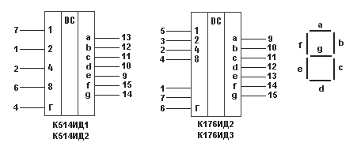

Преобразователь кодов
Преобразователи кодов служат для перевода одной формы числа в другую. Их входные и выходные переменные однозначно связаны между собой. Эту связь можно задать таблицами переключений или логическими функциями. Примером преобразователя кодов является дешифратор.
Преобразователь двоично-десятичного кода в код семисегментного индикатора
Числа на табло и пультах индицируются, как правило, в десятичном коде. Для этого можно использовать дешифратор на микросхеме К155ИД1 совместно с газоразрядным индикатором. Однако применение таких индикаторов в радиолюбительской практике нежелательно из-за сравнительно высокого напряжения источника питания (200 В). Сейчас широкое распространение получили так называемые семи сегментные светодиодные и жидкокристаллические индикаторы, которые работают при тех же напряжениях, что и микросхемы. В них индикация осуществляется семью элементами, как показано на рисунке 1. Подавая управляющее напряжение на отдельные элементы индикатора и вызывая его свечение (светодиодные индикаторы) или изменяя его окраску (жидкокристаллические индикаторы), можно получить изображение десятичных цифр 0, 1,..., 9.
Преобразование двоично-десятичного кода в код семисегментного индиктора показано в таблице 1.
Таблица 1
| Цифра | Входы | Выходы | |||||||||
|---|---|---|---|---|---|---|---|---|---|---|---|
| 8 | 4 | 2 | 1 | a | b | c | d | e | f | g | |
| 0 | 0 | 0 | 0 | 0 | 1 | 1 | 1 | 1 | 1 | 1 | 0 |
| 1 | 0 | 0 | 0 | 1 | 0 | 1 | 1 | 0 | 0 | 0 | 0 |
| 2 | 0 | 0 | 1 | 0 | 1 | 1 | 0 | 1 | 1 | 0 | 1 |
| 3 | 0 | 0 | 1 | 1 | 1 | 1 | 1 | 1 | 0 | 0 | 1 |
| 4 | 0 | 1 | 0 | 0 | 0 | 1 | 1 | 0 | 0 | 1 | 1 |
| 5 | 0 | 1 | 0 | 1 | 1 | 0 | 1 | 1 | 0 | 1 | 1 |
| 6 | 0 | 1 | 1 | 0 | 1 | 0 | 1 | 1 | 1 | 1 | 1 |
| 7 | 0 | 1 | 1 | 1 | 1 | 1 | 1 | 0 | 0 | 0 | 0 |
| 8 | 1 | 0 | 0 | 0 | 1 | 1 | 1 | 1 | 1 | 1 | 1 |
| 9 | 1 | 0 | 0 | 1 | 1 | 1 | 1 | 1 | 0 | 1 | 1 |
Цоколёвка некоторых микросхем – преобразователей кода 8421 в семисегментный показана на рис. 1.

Рис. 1 - Преобразователи кодов для семисегментного индикатора
На микросхемы серии К514 поступают входные сигналы уровней ТТЛ. Сигнал Г служит для гашения индикации напряжением низкого уровн. При нормальной работе уровень сигнала Г=1. Дешифратор на микросхеме К514 работает со светодиодными индикаторами, имеющими раздельные аноды, на К514ИД2 - с раздельными катодами. Дешифратор К514ИД2, подключают к индикаторам через токоограничительные резисторы (200-500 Ом) в первый имеет такие резисторы в своем корпусе.
Микросхемы К176ИД2 и К176ИДЗ являются преобразователями кода с выходным регистром памяти. Запись информации в память происходит по фронту тактого сигнала, подаваемого на вход S (при этом сигнал на входе К=0). Если К=1, дешифратор блокируется. Выходной код этих дешифраторов прямой при М=0 и обратный при М=1. Дешифраторы предназначен для работы с жидкокристаллическими и люминесцентными индикаторами. Они могут работать и со светодиодными индикаторами при напряжении источника питания 9 – 12V с пониженной яркостью свечения (из-за ограничения тока до 2-3 мА).